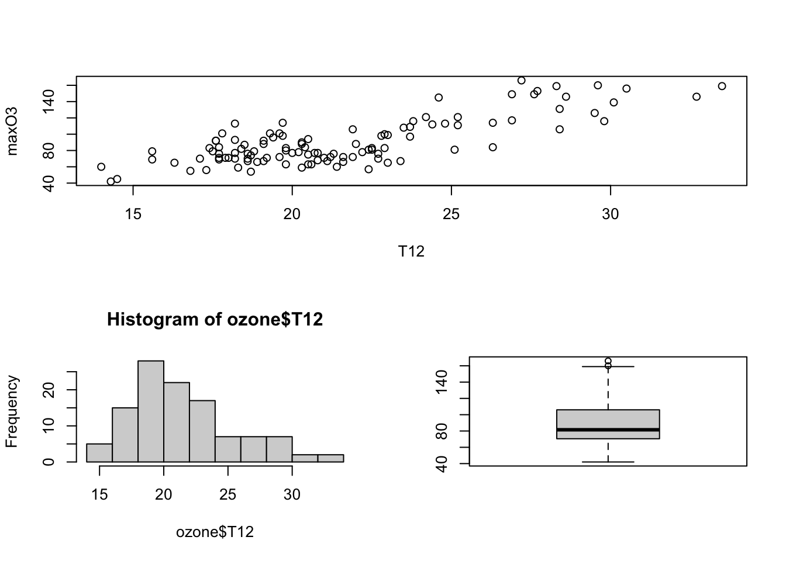
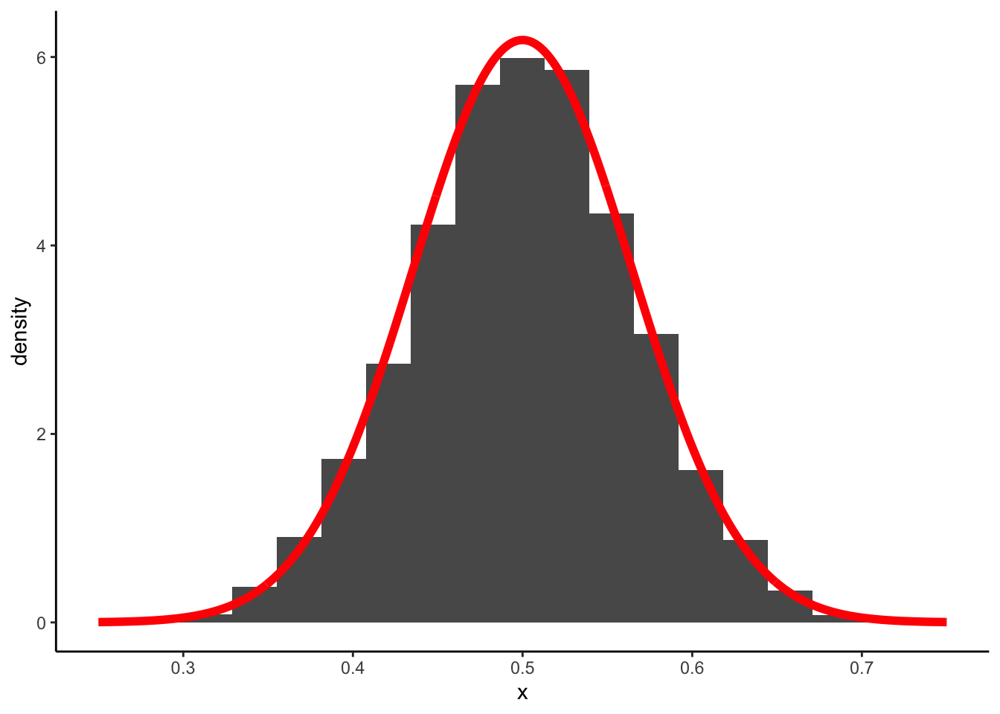

Chapitre 7 Estimation et intervalles de confiance
Dans cette partie nous allons construire des échantillons par simulation et nous intéresser à l’étude de la moyenne de ces échantillons.
7.1 Générer des observations selon des lois de probabilités
R étant un logiciel de statistique, il est bien entendu possible de
- visualiser
- calculer des quantiles
- générer des observations
pour toutes les lois classiques de probabilités. Chaque loi va être identifiée par une chaîne de caractères :
| Loi | Chaine |
|---|---|
| Binomiale | binom |
| Poisson | pois |
| Uniforme | unif |
| Exponentielle | exp |
| Normale | norm |
Un préfixe permettra de spécifier l’action que l’on souhaite effectuer sur la loi :
- d : calculer la densité pour une loi continue ou la fonction de masse pour une loi discrète
- q : calculer les quantiles
- r : générer des observations.
On pourra par exemple :
- Calculer la densité de la loi \(\mathcal N(0,1)\) en -1,0,1 avec
- Calculer les quantiles d’ordre 0.05, 0.5 et 0.95 de la loi \(\mathcal N(0,1)\) en -1,0,1 avec
- Générer 10 observations selon une loi \(\mathcal N(0,1)\) avec
rnorm(10,mean=0,sd=1)
[1] 0.20222019 -1.19621049 0.04375938 -0.05545961
[5] 1.08570925 1.76993522 1.98121980 0.67664960
[9] -1.00061208 -0.31680937Soit \(X\) un variable de loi binomiale \(B(20,0.6)\). Calculer la probabilité que \(X\) soit égale à 1,5,10,15.
Représenter le diagramme en barre associé à la loi \(B(20,0.6)\). On pourra utiliser l’argument stat=“identity” dans la fonction geom_bar.
Générer un échantillon de taille 5000 selon la loi \(B(20,0.6)\). Tracer le diagramme en barres associé à cet échantillon et comparer le à celui de la question précédente.
Tracer la densité de la loi \(\mathcal N(0,1)\).
Générer un échantillon de taille 5000 selon la loi \(\mathcal N(0,1)\). Tracer l’histogramme associé à cet échantillon et comparer le à la densité tracée à la question précédente (on pourra supperposer les 2 représentations).
7.2 Une étude numérique de la moyenne empirique.
On s’intéresse dans cette partie à l’étude de la moyenne empirique \[\bar x_n=\frac{1}{n}\sum_{i=1}^nx_i\] d’un échantillon i.i.d \(x_1,\dots,x_n\). Remarquons déjà que la moyenne empirique dépend des observations \(x_1,\dots,x_n\) : la moyenne va donc changer lorsque les observations changent.
7.2.1 Exemple.
On considère deux échantillons de taille 20 générées selon une loi uniforme entre 0 et 1 :
Les moyennes empiriques pour ces deux échantillons sont différentes :
Ainsi la moyenne empirique peut-être considérée comme une variable aléatoire : elle va donc posséder une loi de probabilité, une espérance… Si on considère l’exemple précédent, on sent bien que la distribution de la moyenne empirique doit
- se répartir autours de 0.5 (qui est la valeur à estimer).
- être de plus en plus concentrée autours de 0.5 lorsque le nombre d’observations \(n\) augmente.
On peut visualiser ce fait en
générant nombre \(B\) (grand) d’échantillons de taille \(n=20\) selon une loi uniforme entre 0 et 1.
calculant les moyennes obtenues pour chaque échantillon
visualisant la distribution de la moyenne de chaque échantillon (en traçant l’histogramme de ces valeurs par exemple).
moy <- data.frame(M=t(moy)) ggplot(moy)+aes(x=M,y=..density..)+geom_histogram(bins=20)+theme_classic()
Le théorème central limite nous dit que cette moyenne \(\bar X_n\) vérifie \[\sqrt{n}\frac{\bar X_n-\mu}{\sigma}\to \mathcal N(0,1)\] avec \(\mu=0.5\) et \(\sigma=1/\sqrt{12}\) ici. On a donc \[\sqrt{n}\frac{\bar X_n-0.5}{1/\sqrt{12}}\to \mathcal N(0,1)\] Ce qui signifie qu’on peut approcher la loi de \(\bar X_n\) par la loi \(\mathcal N(0.5,1/(12n))\) avec \(n=20\).
x <- seq(0.25,0.75,by=0.001)
df <- data.frame(x=x,y=dnorm(x,0.5,1/(sqrt(12*20))))
ggplot(moy)+aes(x=M,y=..density..)+geom_histogram(bins=20)+
geom_line(data=df,aes(x=x,y=y),color="red",size=2)+theme_classic()+xlab("x")
Faire le même travail pour des tailles d’échantillon de 50, 100 et 500. Interpréter.
Faire le même exercice pour une loi gaussienne \(\mathcal N(1,2)\) et une loi de Bernoulli \(\mathcal B(0.6)\).
7.3 Intervalles de confiance
On cherche ici à illustrer numériquement le niveau d’un intervalle de confiance. On rappelle que \([A,B]\) est un IC de niveau \(1-\alpha\) pour un paramètre \(\theta\) si \[P(\theta\in[A,B])=1-\alpha.\]
On fixe ici le niveau à 0.95 (\(\alpha=0.05\)). On considère \(n\) observations \(x_1,\dots,x_n\) i.i.d de loi \(\mathcal N(\mu,1)\) et on cherche un intervalle de confiance pour \(\mu\).
Générer \(n=100\) observations i.i.d. selon la loi \(\mathcal N(\mu,1)\) avec \(\mu=1\).
Calculer un intervalle de confiance pour \(\mu\) de niveau 0.95.
Selon-vous, peut-on dire que la probabilité que \(\mu\) appartienne à l’intervalle trouvé est de 0.95 ? Si non, comment peut-on interpréter cette formule.
Générer 5000 échantillons i.i.d. de loi \(\mathcal N(1,1)\) de tailles 100. On pourra mettre le tout dans une matrice de taille 5000*100.
Calculer un intervalle de confiance de niveau 0.95 pour chacun des 5000 échantillons. On pourra utiliser une boucle for ou la fonction apply.
Sur les 5000 intervalles obtenus, calculer le nombre de fois où la vraie valeur de \(\mu\) (en l’occcurence ici 1) se trouve à l’intérieur de l’intervalle.
Refaire les questions 5-6-7 avec des IC de niveau 0.90.
On considère les données sur les iris de Fisher. Construire un intervalle de confiance de niveau 90% pour les paramètres suivants :
La longueur de Pétales moyenne
La largeur de Sépales moyenne de l’espèce Setosa
La largeur de Sépales moyenne des espèces Versicolor et Virginica
On considère \(x_1,\dots,x_n\) un échantillon i.i.d issu d’une loi de Bernoulli de paramètre \(p\in[0,1]\) inconnu.
Proposer un estimateur \(\widehat p\) pour \(p\).
A l’aide du TCL, obtenir la loi asymptotique de \(\hat p\).
En déduire un intervalle de confiance de niveau \(1_\alpha\) pour \(p\).
Que pouvez-vous reprocher à l’intervalle proposé à la question précédente ?
Proposer une solution.
Afin de tenter de deviner qui va gagner une élection entre deux candidats \(A\) et \(B\) on effectue un sondage. On demande à 100 personnes pour qui elles vont voter. Les résultats sont reportés dans le vecteur suivant.
On désigne par \(p\) la propotion (inconnue) d’électeurs qui vont voter pour \(A\).
Proposer et calculer un estimateur de \(p\).
Que pouvez-vous conclure a priori.
Il semble que \(A\) va remporter l’élection.
En vous basant sur l’exercice précédent, calculer un intervalle de confiance de niveau 95% pour \(p\).
Est-ce que l’intervalle obtenu conforte votre conclusion de la question 2 ?
Calculer un intervalle de confiance pour \(p\) à l’aide de la fonction prop.test.
Pour le jeu de données decathlon disponible ici
on souhaite comparer les performances au 100m en fonction de la compétition (Decastar vs JO).
Calculer un intervalle de confiance de niveau 95% pour la vitesse moyenne au 100m au Decastar.
Même question pour les jeux olympiques.
Pouvez-vous conclure sur la question posée ? Si non, que faire ?